Games and Graphics Level 3 Final Major Project
Contents
Jon Key
In this section, I intend to do some research, use digital skills to reproduce the style of Jon Key, apply the style to my research, and the reflect on how I achieved this.
Jon Key uses colours to represent history of his identity. He mainly uses green, violet, black and red.
Colour Swatches
These colour swatches are colours picked directly from Jon Key's work.
Here are some patterns inspired by Jon Key's work, using the above colour swatches. These patterns can be made by creating a square area by hand and then dragging them into the swatches panel, this will then allow you to apply the pattern to any shape just like you would with a colour.
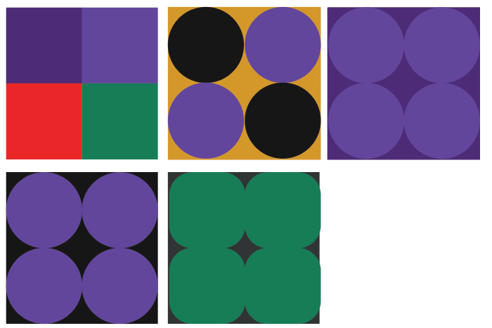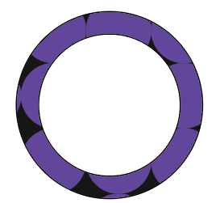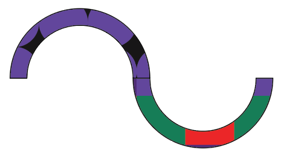
Jon Key Face Offset Circle
I first chose the pattern I was going to use and then created a half circle with the middle taken out of it and applied the pattern.
Next, I made the hands, basing them off a piece of Jon Key's work, first I got the general shape, and then added layers on top to add shading.
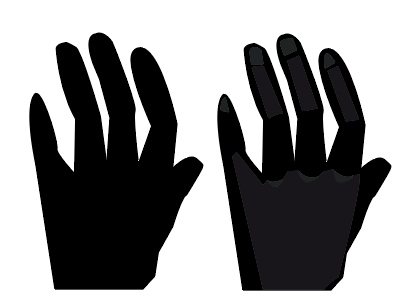
I then created the face, which was done by creating a simple rectangle, then adding some layers on top, and after that adding the rest of the facial features and ears to make it look like a face.
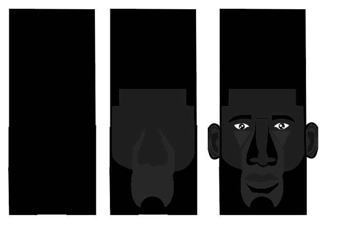
Lastly, I put it all together, and ended up with this piece belo.
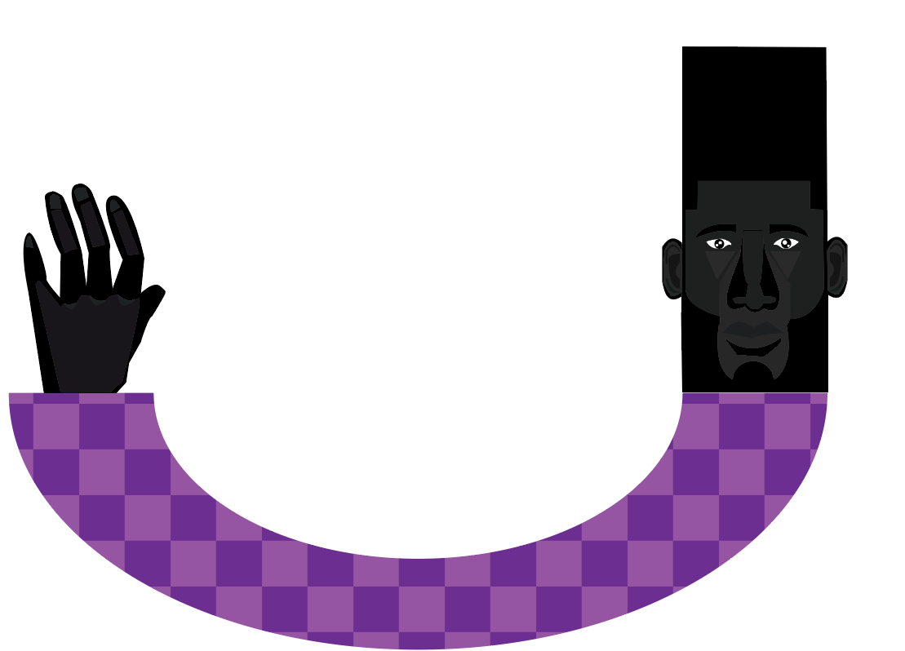
Preston Town Centre Contact Sheets
Here are all of the images I took on a trip to Preston Town Centre. I have created a contact sheet using the Contact Sheet II tool in Adobe Photoshop for easier viewing.
The intention of the trip was to gather images of various thigns around the theme 'connections', I chose to mostly focus on benches, as those connect people.The rest are for use as textures, such as the tiled flooring. These will be used later in Adobe Photoshop and Autodesk Maya.
 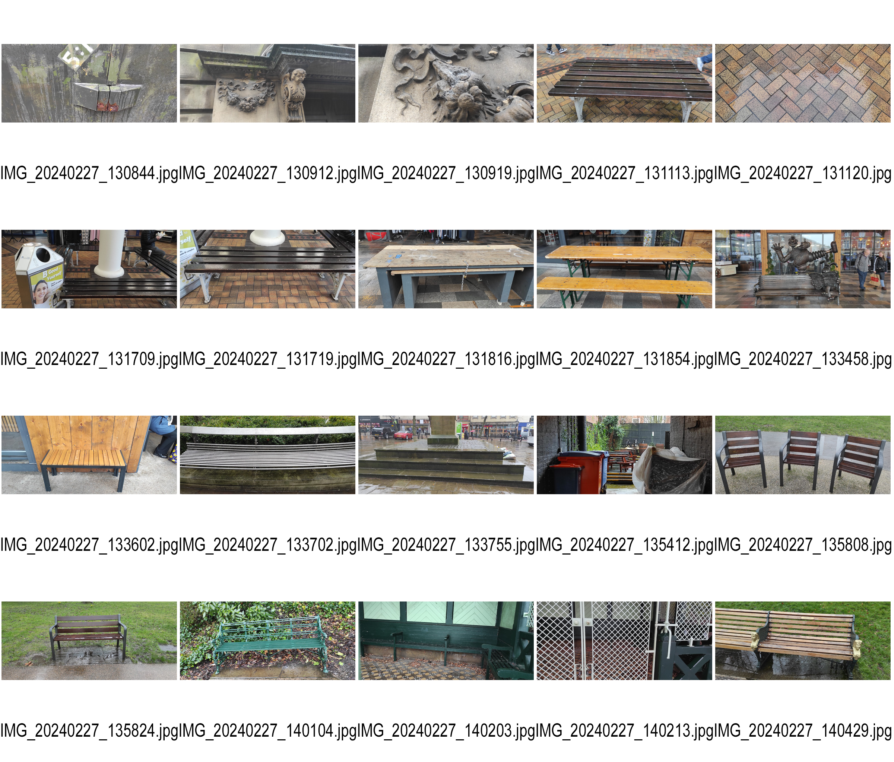
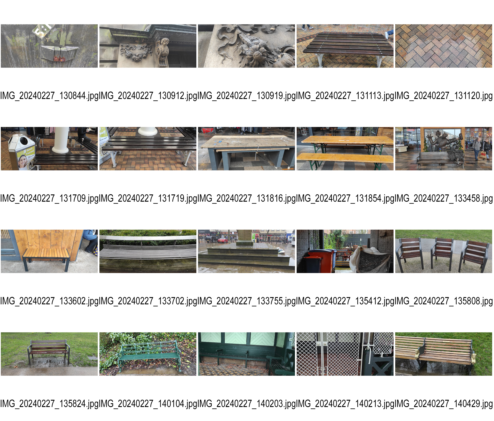
Pablo Thecuadro - Photoshop work
The image below may look strange at first until you look a little closer, it is a picture of a bench, but some parts have been moved around, for example, there is an arm rest cutting through the middle where there isn't supposed to be, and some plank hanging out further than it is supposed to. This piece is made in Adobe Photoshop, using just a singular picture and all of the resources within.

In this next one, two images have been combined, as you can see, the bench is two different colours and has parts made out of wood and some made out of metal. There is also a second Wallace peeking over at Gromit's newspaper, and there is another newspaper that the bigger Wallace is holding.
There is also some leaves and other plants where there isn't supposed to be.

This next image is my attempt at recreating the above image by hand using the Wacom tablet, it most certainly isn't exact, but it also doesn't suffer from the same issues that just cutting parts of pictures and adding them into another brings.

This next image is meant to show the connection between transport and people, in this case between two different places. I have chosen 1920s Blackpool and 2024 Preston for this.
It definitely takes the fragmented look of Pablo's work, but I feel it is also lacking in human contact. Given the time I had to create this piece, I think I made a good attempt at it, it can definitely be improved.


Everyone in the class uploaded their work to Padlet for peer feedback, and this is the feedback I recieved. I will be taking the feedback about the lack of variety of vehicles and the lack of humans on board, and making improvements where appropriate.
George Stoyanov
Giger's Watches - Maya work
Textures I took in Preston Town Centre, some have been edited in photoshop to make them more unique and to change the colour tsomething more unnatural.


I then took an object, put it into Maya and used many copies of it to create a completely new object.
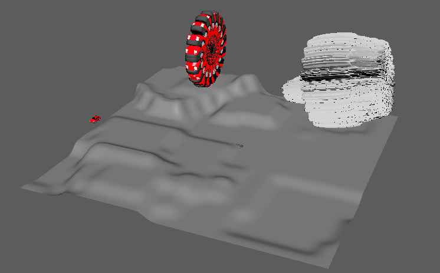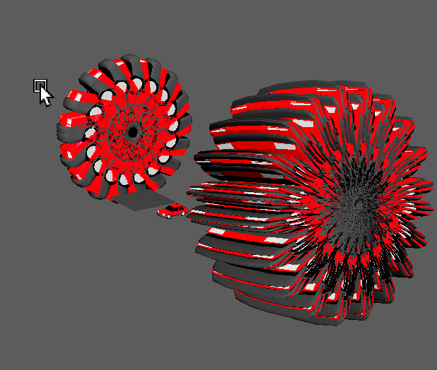
Next, I added texture to both the landscape and the objects, then rendered the environment, below is the final outcome.
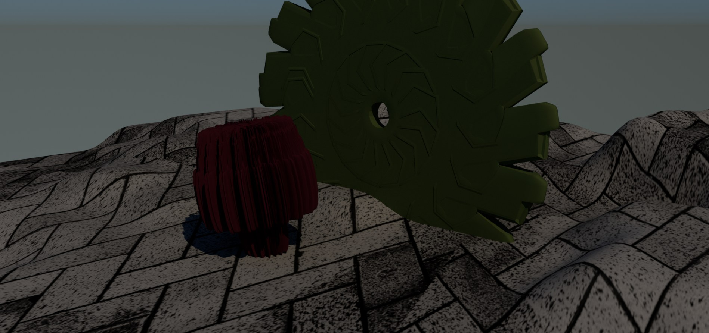
With more time I am confident I could have come up with something with more variety and something more interesting, but I am happy with what I have created considering the limited amount of time.
Cardboard Model
Artist Research


My Cardboard Model


Manchester Trip Contact Sheets
I have created contact sheets in Photoshop of all of the photos I took during a trip to Manchester.


Transport and how it connects us - Concepts
CAT 1
Concept - The challenge of going on a difficult journey and how it can break people apart
Research - Ukraine, railway stations and displaced people (war)
Artists: Umberto Boccioni and Robert Delaunay
Technique - Photographic using people and reflections, and shattered imagery using Adobe Photoshop
Ukraine War Research
The Russo-Ukrainian War began in Feburary 2014, however it was just a few incidents during that time, along with political tension. It wasn't until February 2022 when Russia launched an invasion on Ukraine, which was Russia's attempt at retaking the land that belonged to the Soviet Union. This war would go on to cause millions to flee the country and many to be displaced.
The people affected by the war would soon learn about the challenges that the current transport links bring.
Umberto Boccioni
The focus for this artist would be the pieces he made known as the three states of mind, "The Farewell", "Those Who Go", and "Those Who Stay".
To me, these three pieces show the emotions of saying farewell, leaving and the ones who stay. The emotions associated with these are strong and painful. They also have a fractured look, which could represent the breaking apart of people, much like glass, it is never the same once it's got cracks in it, neither will the relationship with whoever you're saying farewell to.


Futurism
Futurism is an art movement using elements such as technology and transport such as the car and the airplane.
Futurism also uses cubism techniques meaning that shapes are the focus, which is quite obvious when looking at a futurist piece, as they use strange looking shapes from many different angles, the point is that it won't look realistic, but it will show many different perspectives in just one piece.
Below is an example of futurist art, this seems to be the whole experience of being in one place put into a single image, everything is quite fragmented and looks like many parts of different pictures.
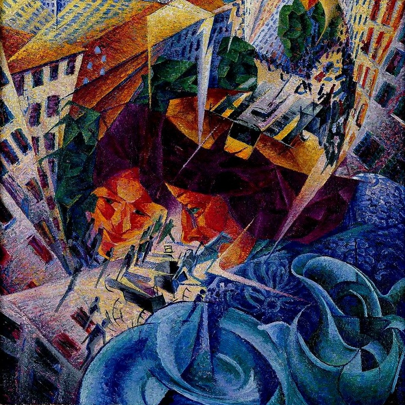
CAT 2
Concept - How transport and emotions are linked
Artist - Vincent Van Gogh
Technique - Create a 3D model/environment in Maya
Vincent Van Gogh
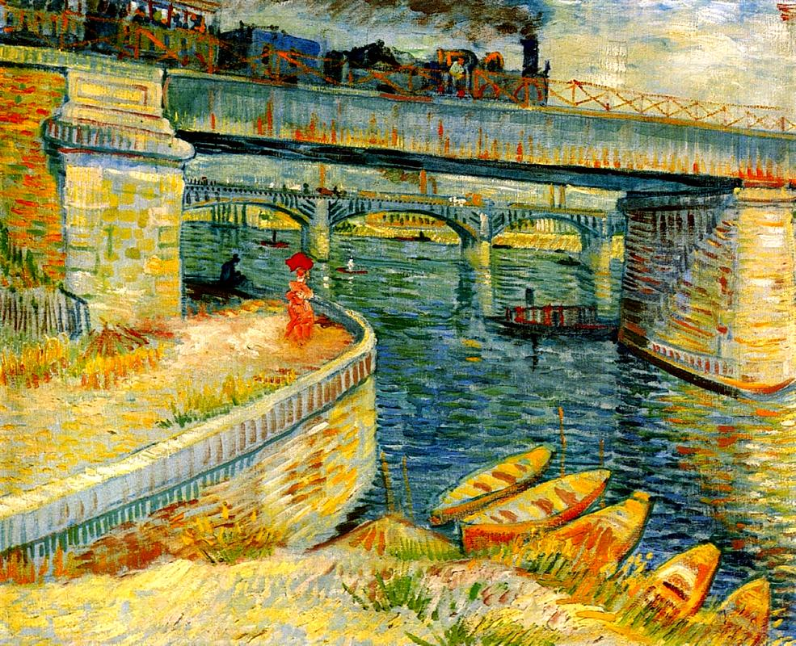
This painting here shows a steam train travelling over a bridge. Van Gogh uses bold colours to show emotion, along with symbolism.
Here is a picture I have taken, which will be used as inspiration for the model.
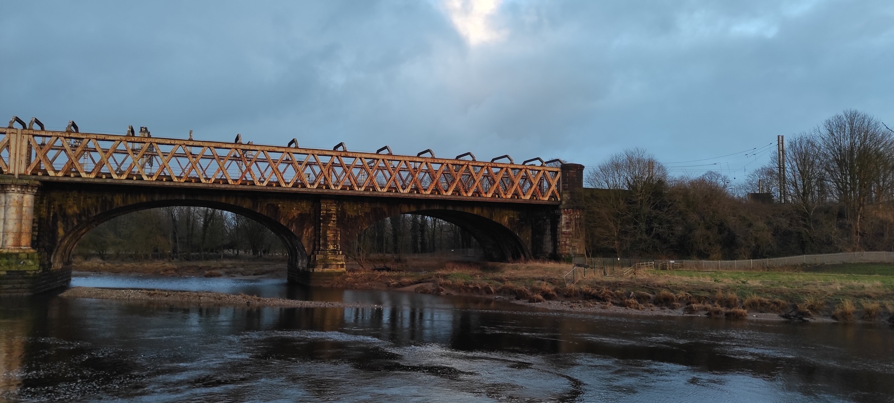
The Model
After gathering information about Van Gogh, along with some inspiration, I started creating a model of a valley with a bridge.
To begin with, I started with making a new flat plane and then reshaped it to create a valley.

I then began to create the basic shape of the bridge, this is a good base to work from but still needs some work.

Next, I added arches to the bridge using the Extrude Tool [CTRL+E]

CAT 3
I began this concept by drawing the shape onto an upside down piece of paper using a pencil, the other side was coverred in ink, so on the other side would be the same thing I just drew but backwards, this works by using the pressure of the ink to press it into the paper.
Once the pictures were dry I began adding detail to them using oil pastels, I tried matching the oil pastel colour to the original picture where possible, this looked better on the bridge and car than the bus stop though. The colours used on the bus stop are not the ones I would pick if I was doing this again. I know now that this wasn't a good combination.
While I think this project worked out well with the oil pastels, I wish I had experiemented with more mediums such as marker and paint to see which had the best effect along with using some better colours. I would also use black ink instead of red, unfortunately I wasn't given a choice for this one because red was all that was left, but black would have been way easier to work with when it came to adding colours.
I also believe that this project was useful because it helped with getting the shape right on a few important objects such as bridges and cars, this will be helpful for the final project, as it will include cars, and most certainly bridges. Hopefully as the final project progresses, I will be able to call this project more useful than I am doing right now.
Below are each of the pieces I produced for this project


Statement Of Intent
I started this project by looking at multiple artists and creating my own pieces inspired by their work. After that I carried out some primary research, by taking pictures in Preston town centre. At this point I had already been given the theme, connections, but I was still unsure of what I wanted to do, so I took pictures that could relate to the theme, along with some textures that would later be used in Maya. Ultimately, I wouldn’t end up using many of those pictures, but it was enough to get me to begin thinking about the project.
The next thing I did was create a survey, while helpful in showing me what connections meant to different people, I don’t think this was the most useful form of research. Next time I create a survey, I will create a survey with less and more focussed questions.
After that I did some research on models made of cardboard, and then created my own model of a car. This exercise was useful because it made me think about how to put together a model piece by piece and to use realistic measurements.
At this point, I had come up with a concept, that being Transport and how it connects us. Deciding on the concept for the project gave it direction, which will help focus future research and development for this project. With that, the next research trip came, and we went to museums in Manchester, whilst some of the pictures I had taken were not so helpful, there was a few that would become useful later, such as a car from about a century ago.
Another piece of primary research that was useful was a picture of the train bridge that runs over the river Ribble, whilst on an evening walk. The lighting would turn out to be perfect and ended up being the key to figuring out what to do for the final project.
I also did some research on the Ukraine War which is what my piece is going to be based around, more specifically how transport connects people, and the challenges that go along with it. I also did some research on futurism and investigated the artist Umberto Boccioni. I mainly looked at his pieces, called “The Farewell”, “Those Who Go”, and “Those Who Stay”. This work could relate to those who have to say goodbye to loved ones, those who must leave them, and those who must stay behind without them.
I also did some research on the artist known as Vincent Van Gogh and found that a lot of his work contains some form of transportation, such as steam trains. The main characteristic of his work that is interesting is the way he uses colours to show emotion along with using symbolism.
For my Final Major Project, I have decided that I am going to create a short animation to tell the story of a family that has been separated in the Ukraine war and how they go on a difficult journey, this animation will use colours and symbolism to show emotion. I will do this by continuing to develop the environment I have begun creating in Maya and create characters that will be used in the story.
Planning Mind Map
I have created a mind map which consolidates my ideas and research for the project.

The Plot
First scene will start with sirens blaring as the city is under attack by the Russians. Our main characters grab what they need from their home, and leave.
The second scene will be the family heading towards the train station.
The third will be arriving at the train station and getting ready to board. Unfortunately, the father has to stay in Ukraine to fight the Russians, so an emotional goodbye takes place on the platform before getting on the train.
The mother and daughter are on the train heading to safety.
Characters
I have created each of the main characters for the project, and each is designed to be different, and have different interests.
Sasha
Young girl – 10 years old
Blue eyes
4 feet tall
Wears long skirts and simple t-shirts.
Is curious about the world, loves to read books.
Dymtro
Father of Sasha, 35 years old
Green eyes
6 feet tall
Wears suit like clothing, shirts, etc
Serious, hard working man with a kind heart, spends a lot of time with his family.
Viktoriya
Mother of Sasha, 32 years old
Blue eyes
5 foot 5 inches tall
Wears traditional Ukrainian clothing, so long skirt, and basic top, much like Sasha.
Much like her daughter, reading is her favourite hobby and always has a curiosity to feed, she is also very kindhearted and spends a lot of time with the family.
Starting Again
About four weeks into the project, I had realised I took on way too big of a project that couldn't possibly be finished, especially at my skill level, so I made the difficult decision to start over. I have learnt from my mistake here, and am going to do a much smaller project for FMP, and not an animation. Unfortunately, I had already spent about a month working on the animation project, with not much in the way of results, that is a lesson learnt though, don't take on a project that is more than you can handle. At least the characters and story are relatively well developed, so those can be reused.
Storyboard
I started by creating a storyboard, I figured I could still reuse the story I wrote for the animation here. I had already gotten to the point where I had planned out each scene, so I drew each one here. This however, didn't work well because it showed too many transition scenes, such as leaving the room, walking up stairs, which doesn't work for a graphic novel, but would for an animation.
So even if the drawings were improved, it would still be unengaging at best.
This was helpful though, as it gave me the opportunity to put these ideas down on paper as drawings, and some ideas from this will likely be used later in the project.
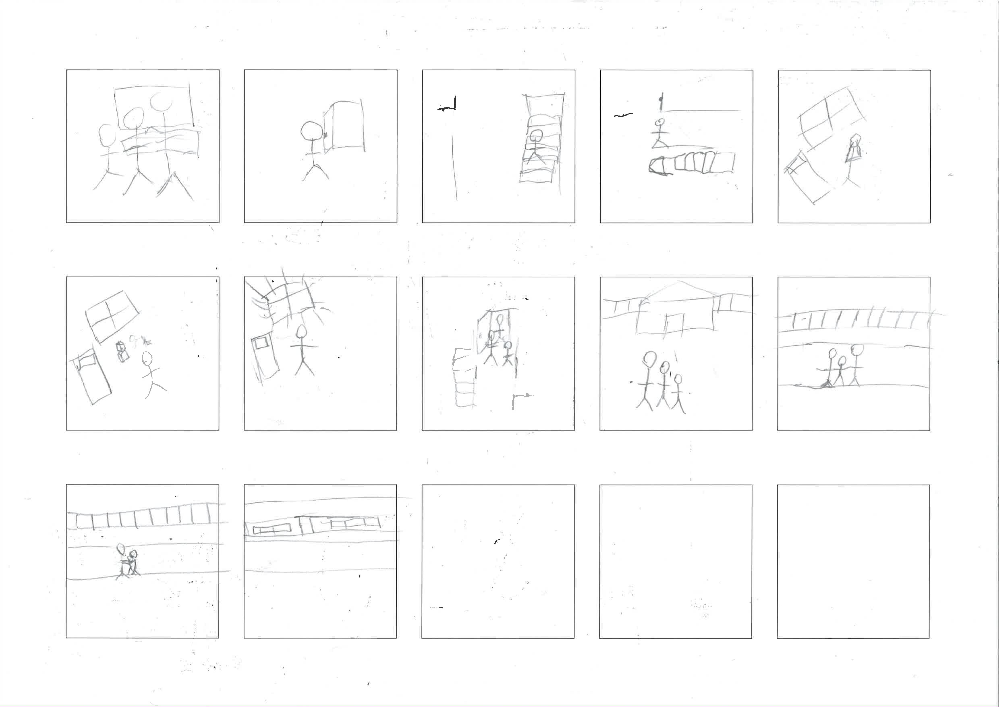
Moodboard
I then created a moodboard, which will help with gathering many ideas and putting them in one place. This, and the extra research was helpful, because it gave me more ideas and more context about Ukraine, the flag, the war and most importantly, the transport. Some of these images would also be used for the next part, they will help with some designs.

Ink Rolling
I decided to give ink rolling another go, since the outcomes were good last time I tried it. It had bene a while since I had last done it though, so many mistakes were made during this process, but they were neccessary because I learnt from them.
The first two pieces I did, didn't look very good, but this was because I had been drawing freehand, taking too long to complete a piece and the ink drying out and using far too much ink. Additionally, I also didn't clean the board between these two, which caused them to look smudged. The subsequent pieces were much better, although some did still use a bit much ink, and still didn't quite do it fast enough, but with practice, that can be improved. Art isn't an exact science after all.
There was also another thing that affected the quality of this work, and that is my hand becoming rather shakey after about 30 mins of this, so some of the lines that were supposed to be straight, ended up being a little more wavey instead. What I learnt from that is I shouldn't do as many of these at once for the best quality work.
I am quite happy with how these turned out overall, and I think this unique style could be an asset to this project. The reasoning for this design choice is to make it look like a child's drawing, as the goal here is to show the challenges of escaping a war through the eyes of a young child.
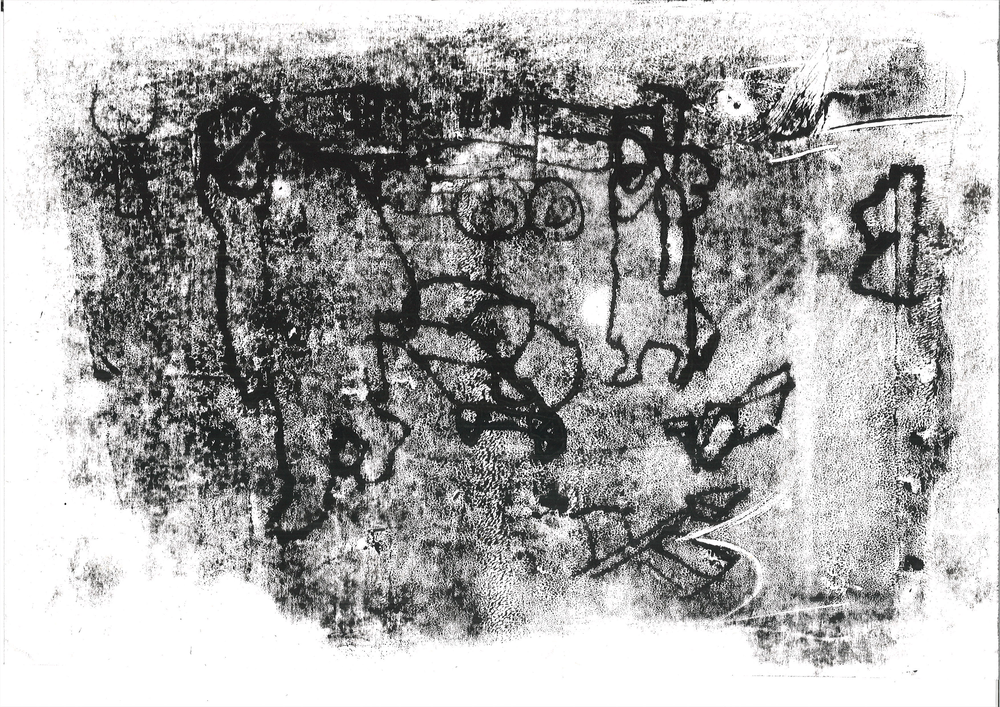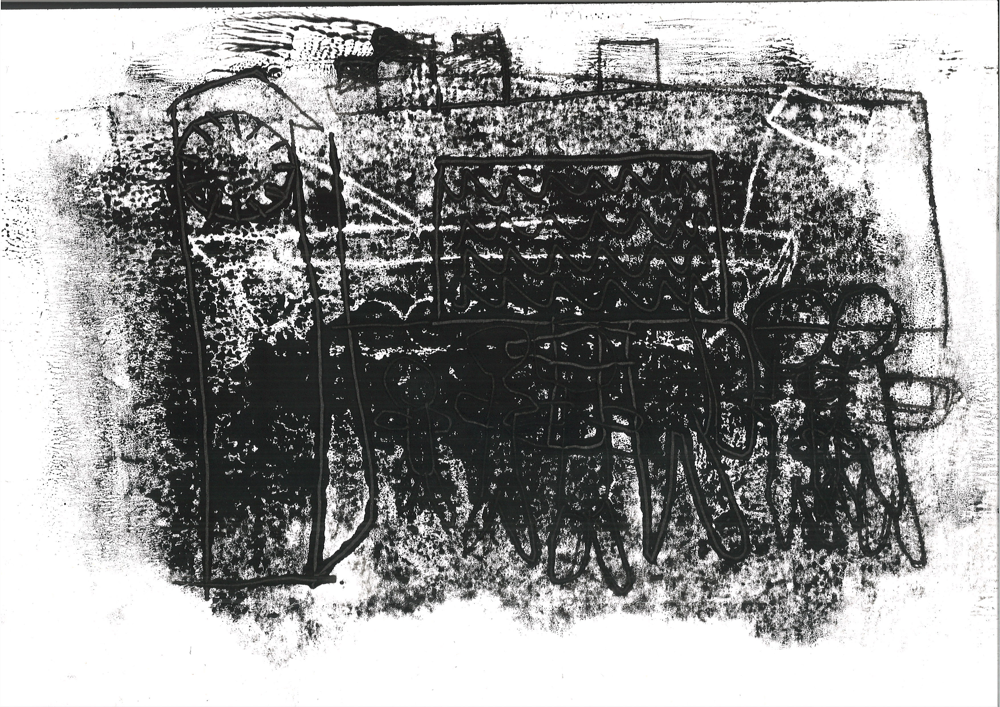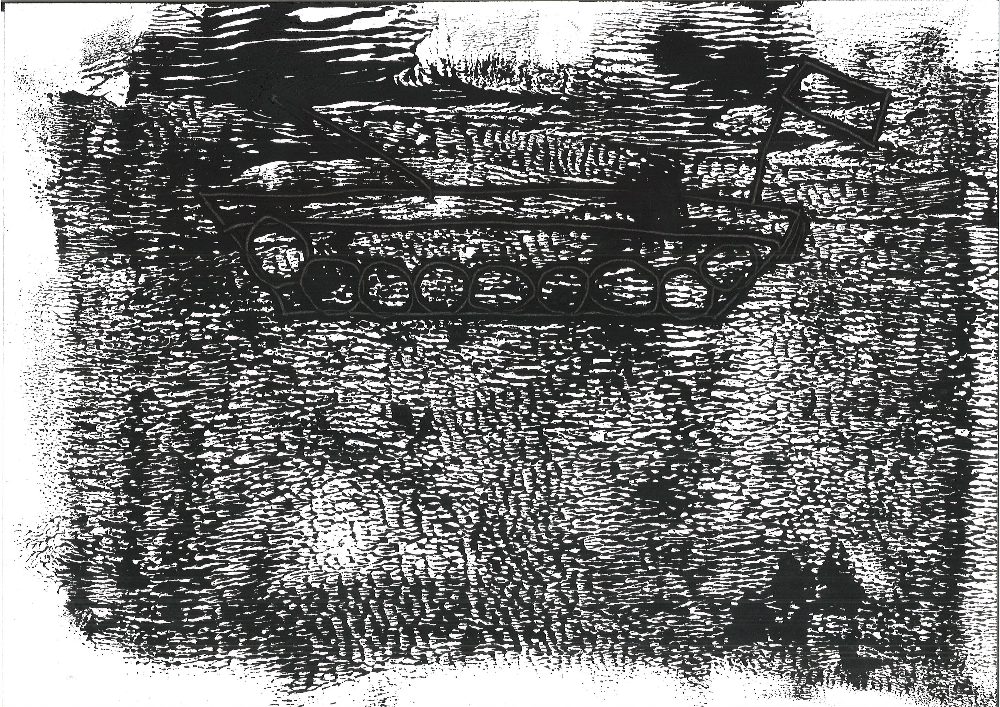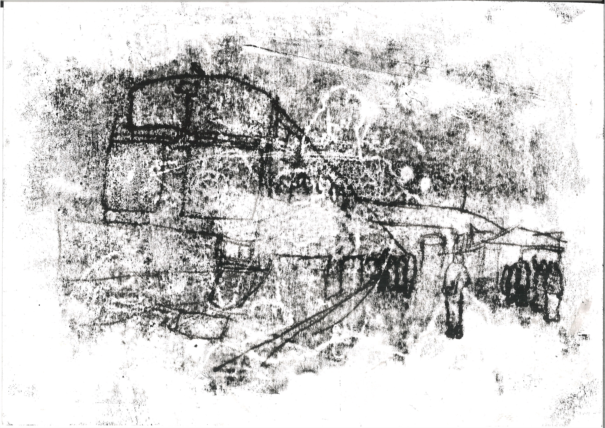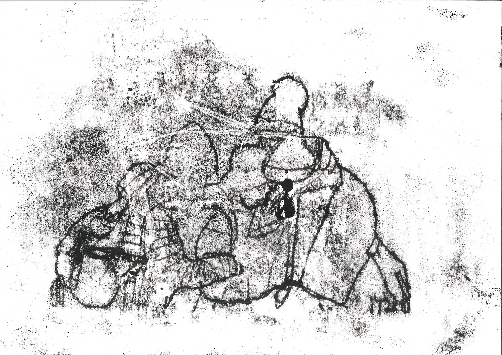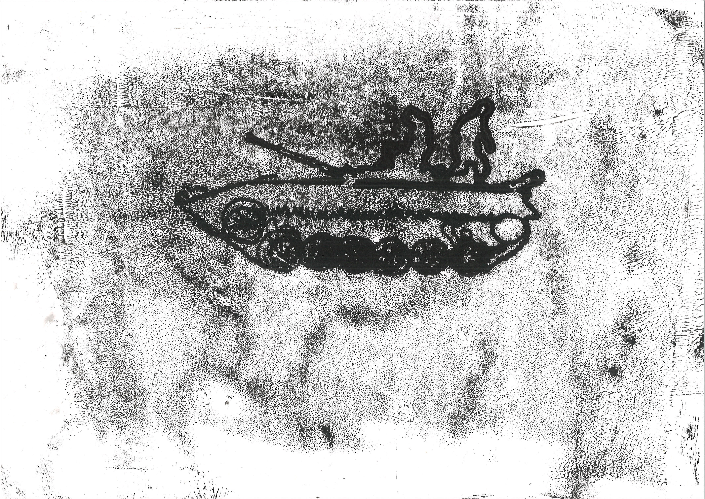
Next, I tried colouring the image, but the colours ended up being to pastel, and there was too much noise from the ink.

I gave colouring another go, and changing the hue worked out much better, definitely something that can be used as a base for something else later. Almost looks like it has been stained by tea perhaps.

After taking some time to think about what needs to be done next in the project, I ended up coming up with this:
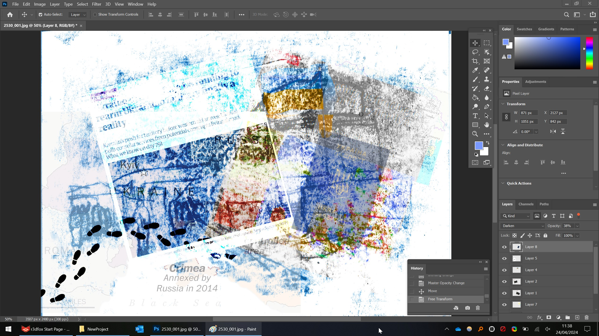
This here was done by adding many different related images on top of each other and using various layer blending options and fiters in Photoshop. Whilst not the final image, it is a good step in the right direction.

Here is the final image, I ended up applying a blur effect to make it look like it is through the perspective of someone crying or tearing up, and the wind effect which is caused by the train.
What it looks like to me is someone drew parts of this using ink, and cried over it.
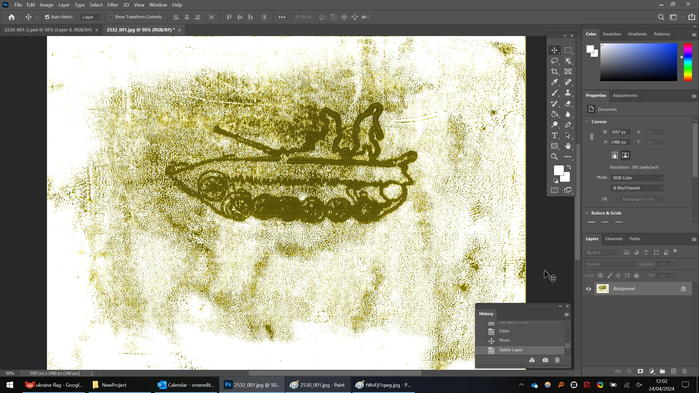
A single image wasn't going to be enough for this project, so I started on another one right away, in this case, I took the better tank piece and added a muddy yellow hue onto it.
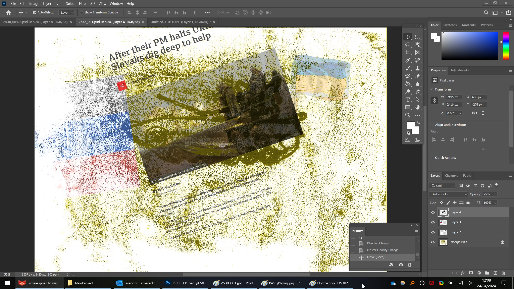
After that I added a news article related to the war, and a Ukrainian flag, then blended a Russian flag in on the left.

Next, I added part of an image of an explosion, which is supposed to be in the background, so a little ways off in the distance.
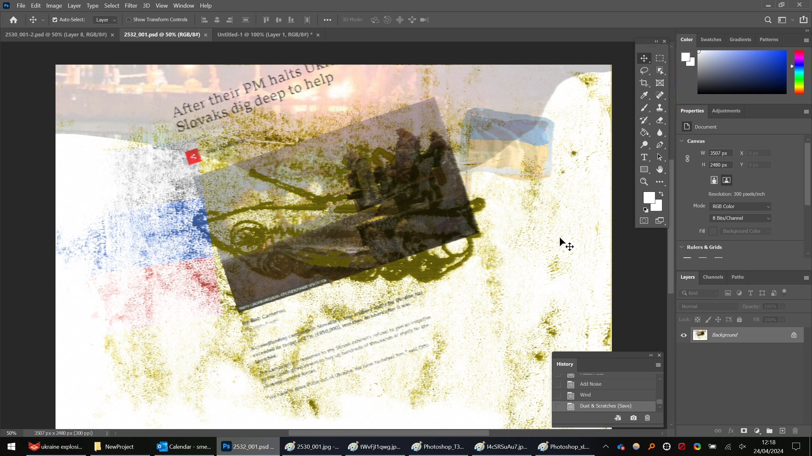
And after that, I added some extra effects, and now I would say this one is done.
Below is the final image.

These two pieces that I have made so far, whilst not perfect, was an excellent use of time and look good. Hopefully a couple more of these will suffice for the final project
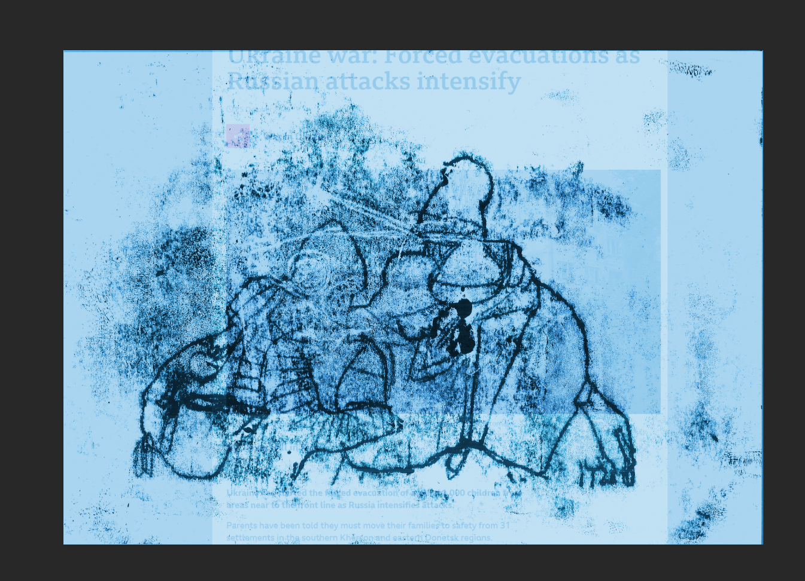
Here, I have started another one, this one is of a family huddling up. I have changed the colour to a blue, and this time, learnt from my mistakes last time and made the lightness darker, which would change the background white colour to a light blue.
I have also added a news article in the background, and as a result of the lower lightness, it looks much better.
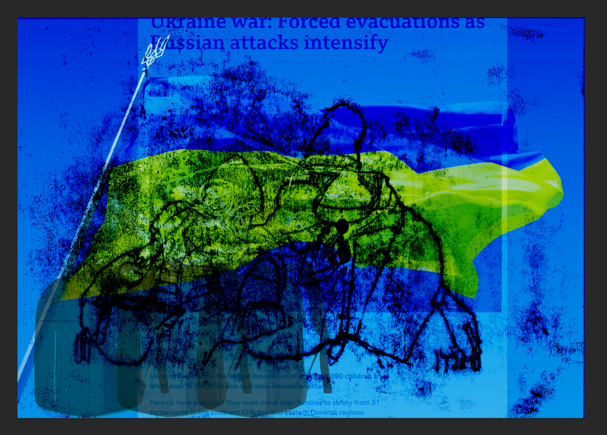
I have now added the Ukraine flag and some backpacks in. I'm not so sure about the backpacks, but I think the Ukraine flag was a good addition.

This is the final image, I applied some effects and it looks just perfect, still very simple too, which in this case, I think it works in its favour.
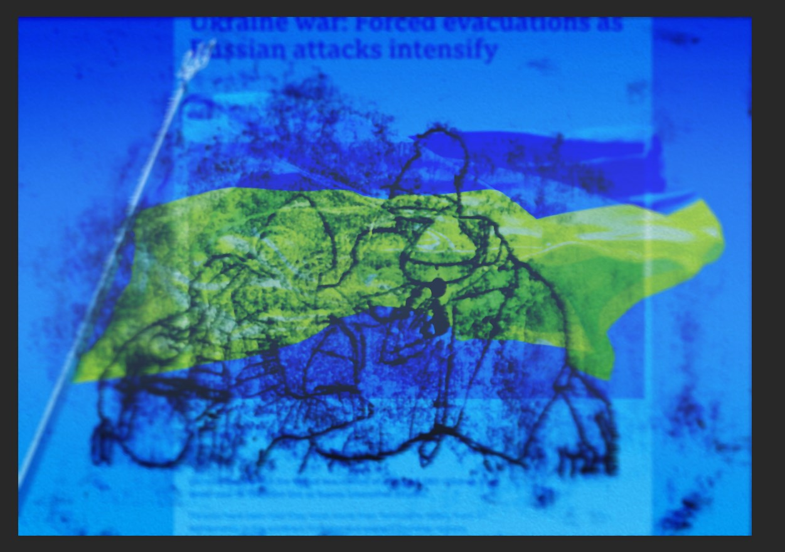
I decided to experiment with adding a light brush over in blue, I'm not sure if this looks better or not though.